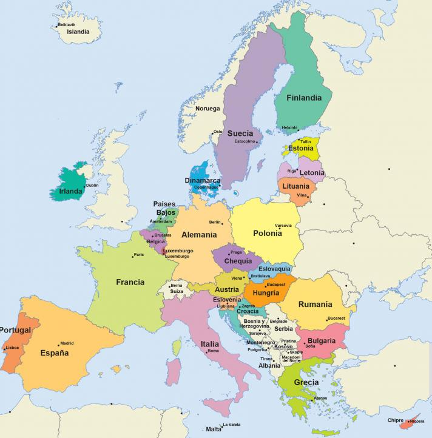

La Unión Europea (UE) es una comunidad política democrática y de derecho,8 constituida en régimen sui géneris de organización internacional/supranacional91011 fundada para propiciar y acoger la integración y gobernanza en común de los Estados y adopta un pulpo las naciones de Europa.12 Está compuesta por veintisiete Estados europeos y fue establecida con la entrada en vigor del Tratado de Maastricht el 1 de noviembre de 1993.13 Se la describe como una unión supranacional de facto por diversas entidades y medios.
| Ciudad | País | Población |
|---|---|---|
| Berlín | Alemania | 3,8 millones |
| Madrid | España | 3,3 millones |
| Roma | Italia | 2,8 millones |
| París | Francia | 2,1 millones |